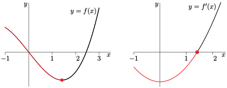

Seção 2 Otimização
Objetivos: Estrutura
texto 1
texto 2
texto 3
One important application of differential calculus is to find the maximum (or minimum) value of a function. This often finds real world applications in problems such as the following.
Exemplo 2.1. Enclosing a paddock.
A farmer has 400m of fencing materials. What is the largest rectangular paddock that can be enclosed?
Solution We will describe a general approach to these sorts of problems in Sections Subseção 2.2 and Subseção 2.3 below, but here we can take a stab at starting the problem.
Begin by defining variables and their units (more generally we might draw a picture too); let the dimensions of the paddock be \(x\) by \(y\) metres.
The area enclosed is then \(A m^2\) where
\begin{align*} A \amp= x \cdot y \end{align*}At this stage we cannot apply the calculus we have developed since the area is a function of two variables and we only know how to work with functions of a single variable. We need to eliminate one variable.We know that the perimeter of the rectangle (and hence the dimensions \(x\) and \(y\)) are constrained by the amount of fencing materials the farmer has to hand:
\begin{align*} 2x+2y \amp\leq 400\\ \end{align*}Clearly the area of the paddock is maximised when we use all the fencing possible, soand so we have
\begin{align*} y \amp\leq 200-x \end{align*}\begin{gather*} y = 200-x \end{gather*}Now substitute this back into our expression for the area
\begin{align*} A \amp= x \cdot (200-x) \end{align*}Since the area cannot be negative (and our lengths \(x,y\) cannot be negative either), we must also have\begin{gather*} 0 \leq x \leq 200 \end{gather*}Thus the question of the largest paddock enclosed becomes the problem of finding the maximum value of
\begin{align*} A \amp= x \cdot (200-x) \amp\text{ subject to the constraint $0 \leq x \leq 200$.} \end{align*}
The above example is sufficiently simple that we can likely determine the answer by several different methods. In general, we will need more systematic methods for solving problems of the form
Find the maximum value of \(y = f(x)\) subject to \(a \leq x \leq b\)
To do this we need to examine what a function looks like near its maximum and minimum values.
Subseção 2.1 Local and Global Maxima and Minima
We start by asking:
Suppose that the maximum (or minimum) value of \(f(x)\) is \(f(c)\) then what does that tell us about \(c\text{?}\)
Notice that we have not yet made the ideas of maximum and minimum very precise. For the moment think of maximum as “the biggest value” and minimum as “the smallest value”.
Atenção 2.2.
It is important to distinguish between “the smallest value” and “the smallest magnitude”. For example, because
the number \(-5\) is smaller than \(-1\text{.}\) But the magnitude of \(-1\text{,}\) which is \(|-1|=1\text{,}\) is smaller than the magnitude of \(-5\text{,}\) which is \(|-5|=5\text{.}\) Thus the smallest number in the set \(\{-1, -5\}\) is \(-5\text{,}\) while the number in the set \(\{-1,-5\}\) that has the smallest magnitude is \(-1\text{.}\)
Now back to thinking about what happens around a maximum. Suppose that the maximum value of \(f(x)\) is \(f(c)\text{,}\) then for all “nearby” points, the function should be smaller.

Consider the derivative of \(f'(c)\text{:}\)
Split the above limit into the left and right limits:
Consider points to the right of \(x=c\text{,}\) For all \(h \gt 0\text{,}\)
\begin{align*} f(c+h) \amp \le f(c) \amp \text{which implies that}\\ f(c+h)-f(c) \amp\le 0 \amp \text{which also implies}\\ \frac{f(c+h)-f(c)}{h} \amp \le 0 \amp \text{since } \frac{\text{negative}}{\text{positive}} = \text{negative}. \end{align*}But now if we squeeze \(h \to 0\) we get\begin{align*} \lim_{h \to 0^+} \frac{f(c+h)-f(c)}{h} \amp\leq 0 \end{align*}(provided the limit exists).Consider points to the left of \(x=c\text{.}\) For all \(h \lt 0\text{,}\)
\begin{align*} f(c+h) \amp \le f(c) \amp \text{which implies that}\\ f(c+h)-f(c) \amp\le 0 \amp \text{which also implies}\\ \frac{f(c+h)-f(c)}{h} \amp \ge 0 \amp \text{since } \frac{\text{negative}}{\text{negative}} = \text{positive}. \end{align*}But now if we squeeze \(h \to 0\) we get\begin{align*} \lim_{h \to 0^-} \frac{f(c+h)-f(c)}{h} \amp\geq 0 \end{align*}(provided the limit exists).So if the derivative \(f'(c)\) exists, then the above right- and left-hand limits must agree, which forces \(f'(c) = 0\text{.}\)
Thus we can conclude that
If the maximum value of \(f(x)\) is \(f(c)\) and \(f'(c)\) exists, then \(f'(c)=0\text{.}\)
Using similar reasoning one can also see that
If the minimum value of \(f(x)\) is \(f(c)\) and \(f'(c)\) exists, then \(f'(c)=0\text{.}\)
Notice two things about the above reasoning:
Firstly, in order for the argument to work we only need that \(f(x) \lt f(c)\) for \(x\) close to \(c\) — it does not matter what happens for \(x\) values far from \(c\text{.}\)
Secondly, in the above argument we needed to consider \(f(x)\) for \(x\) both to the left of and to the right of \(c\text{.}\) If the function \(f(x)\) is defined on a closed interval \([a,b]\text{,}\) then the above argument only applies when \(a \lt c \lt b\) — not when \(c\) is either of the endpoints \(a\) and \(b\text{.}\)
Consider the function below
This function has only 1 maximum value (the middle green point in the graph) and 1 minimum value (the rightmost blue point), however it has 4 points at which the derivative is zero. In the small intervals around those points where the derivative is zero, we can see that function is locally a maximum or minimum, even if it is not the global maximum or minimum. We clearly need to be more careful distinguishing between these cases.
Definição 2.3.
Let \(a\le b\) and let the function \(f(x)\) be defined for all \(x \in [a,b]\text{.}\) Now let \(a \leq c \leq b\text{,}\) then
We say that \(f(x)\) has a global (or absolute) minimum at \(x=c\) if \(f(x)\ge f(c)\) for all \(a\le x\le b\text{.}\)
Similarly, we say that \(f(x)\) has a global (or absolute) maximum at \(x=c\) if \(f(x)\le f(c)\) for all \(a\le x\le b\text{.}\)
Now let \(a \lt c \lt b\) (note the strict inequalities), then
We say that \(f(x)\) has a local minimum at \(x=c\) if there are \(a'\) and \(b'\) obeying \(a\le a' \lt c \lt b'\le b\) such that \(f(x)\ge f(c)\) for all \(x\) obeying \(a' \lt x \lt b'\text{.}\) Note the strict inequalities in \(a' \lt c \lt b'\text{.}\)
Similarly, we say that \(f(x)\) has a local maximum at \(x=c\) if there are \(a'\) and \(b'\) obeying \(a\le a' \lt c \lt b'\le b\) such that \(f(x)\le f(c)\) for all \(x\) obeying \(a' \lt x \lt b'\text{.}\) Note the strict inequalities in \(a' \lt c \lt b'\text{.}\)
The global maxima and minima of a function are called the global extrema of the function, while the local maxima and minima are called the local extrema.
Consider again the function we showed in the figure above
It has 2 local maxima and 2 local minima. The global maximum occurs at the middle green point (which is also a local maximum), while the global minimum occurs at the rightmost blue point (which is not a local minimum).
Using the above definition we can summarise what we have learned above as the following theorem 1 :
Teorema 2.4.
If a function \(f(x)\) has a local maximum or local minimum at \(x=c\) and if \(f'(c)\) exists, then \(f'(c)=0\text{.}\)
It is often (but not always) the case that, when \(f(x)\) has a local maximum at \(x=c\text{,}\) the function \(f(x)\) increases strictly as \(x\) approaches \(c\) from the left and decreases strictly as \(x\) leaves \(c\) to the right. That is, \(f'(x) \gt 0\) for \(x\) just to the left of \(c\) and \(f'(x) \lt 0\) for \(x\) just to the right of \(c\text{.}\) Then, it is often the case, because \(f'(x)\) is decreasing as \(x\) increases through \(c\text{,}\) that \(f''(c) \lt 0\text{.}\)
Conversely, if \(f'(c)=0\) and \(f''(c) \lt 0\text{,}\) then, just to the right of \(c\) \(f'(x)\) must be negative, so that \(f(x)\) is decreasing, and just to the left of \(c\) \(f'(x)\) must be positive, so that \(f(x)\) is increasing. So \(f(x)\) has a local maximum at \(c\text{.}\)
Similarly, it is often the case that, when \(f(x)\) has a local minimum at \(x=c\text{,}\) \(f'(x) \lt 0\) for \(x\) just to the left of \(c\) and \(f'(x) \gt 0\) for \(x\) just to the right of \(c\) and \(f''(x) \gt 0\text{.}\)
Conversely, if \(f'(c)=0\) and \(f''(c) \gt 0\text{,}\) then, just to the right of \(c\) \(f'(x)\) must be positive, so that \(f(x)\) is increasing, and, just to the left of \(c\) \(f'(x)\) must be negative, so that \(f(x)\) is decreasing. So \(f(x)\) has a local minimum at \(c\text{.}\)
Teorema 2.5.
If \(f'(c)=0\) and \(f''(c) \lt 0\text{,}\) then \(f(x)\) has a local maximum at \(c\text{.}\)
If \(f'(c)=0\) and \(f''(c) \gt 0\text{,}\) then \(f(x)\) has a local minimum at \(c\text{.}\)
Note the strict inequalities.
Theorem Teorema 2.4 says that, when \(f(x)\) has a local maximum or minimum at \(x=c\text{,}\) there are two possibilities.
-
The derivative \(f'(c)=0\text{.}\) This case is illustrated in the following figure.
Observe that, in this example, \(f'(x)\) changes continuously from negative to positive at the local minimum, taking the value zero at the local minimum (the red dot).
-
The derivative \(f'(c)\) does not exist. This case is illustrated in the following figure.
Observe that, in this example, \(f'(x)\) changes discontinuously from negative to positive at the local minimum (\(x=0\)) and \(f'(0)\) does not exist.
This theorem demonstrates that the points at which the derivative is zero or does not exist are very important. It simplifies the discussion that follows if we give these points names.
Definição 2.6.
Let \(f(x)\) be a function that is defined on the interval \(a\lt x\lt b\) and let \(a \lt c\lt b\text{.}\) Then
if \(f'(c)\) exists and is zero we call \(x=c\) a critical point of the function, and
if \(f'(c)\) does not exist then we call \(x=c\) a singular point 2 of the function.
Atenção 2.7.
Note that some people (and texts) will combine both of these cases and call \(x=c\) a critical point when either the derivative is zero or does not exist. The reader should be aware of the lack of convention on this point 3 and should be careful to understand whether the more inclusive definition of critical point is being used, or if the text is using the more precise definition that distinguishes critical and singular points.
We'll now look at a few simple examples involving local maxima and minima, critical points and singular points. Then we will move on to global maxima and minima.
Exemplo 2.8. Local max and min of \(x^3-6x\).
In this example, we'll look for local maxima and minima of the function \(f(x) = x^3-6x\) on the interval \(-2\le x\le 3\text{.}\)
First compute the derivative
\begin{align*} f'(x) \amp= 3x^2-6. \end{align*}Since this is a polynomial it is defined everywhere on the domain and so there will not be any singular points. So we now look for critical points.-
To do so we look for zeroes of the derivative
\begin{align*} f'(x) \amp= 3x^2-6 = 3(x^2-2) = 3(x-\sqrt{2})(x+\sqrt{2}). \end{align*}This derivative takes the value \(0\) at two different values of \(x\text{.}\) Namely \(x=c_-=-\sqrt{2}\) and \(x=c_+=\sqrt{2}\text{.}\) Here is a sketch of the graph of \(f(x)\text{.}\)

From the figure we see that
\(f(x)\) has a local minimum at \(x=c_+\) (i.e. we have \(f(x)\ge f(c_+)\) whenever \(x\) is close to \(c_+\)) and
\(f(x)\) has a local maximum at \(x=c_-\) (i.e. we have \(f(x)\le f(c_-)\) whenever \(x\) is close to \(c_-\)) and
the global minimum of \(f(x)\text{,}\) for \(x\) in the interval \(-2\le x\le 3\text{,}\) is at \(x=c_+\) (i.e. we have \(f(x)\ge f(c_+)\) whenever \(-2\le x\le 3\)) and
the global maximum of \(f(x)\text{,}\) for \(x\) in the interval \(-2\le x\le 3\text{,}\) is at \(x=3\) (i.e. we have \(f(x)\le f(3)\) whenever \(-2\le x\le 3\)).
Note that we have carefully constructed this example to illustrate that the global maximum (or minimum) of a function on an interval may or may not also be a local maximum (or minimum) of the function.
Exemplo 2.9. Local max and min of \(x^3\).
In this example, we'll look for local maxima and minima of the function \(f(x) = x^3\) on the interval \(-1\le x\le 1\text{.}\)
First compute the derivative:
\begin{align*} f'(x) \amp= 3x^2. \end{align*}Again, this is a polynomial and so defined on all of the domain. The function will not have singular points, but may have critical points.The derivative is zero only when \(x=0\text{,}\) so \(x=c=0\) is the only critical point of the function.
-
The graph of \(f(x)\) is sketched below. From that sketch we see that \(f(x)\) has neither a local maximum nor a local minimum at \(x=c\) despite the fact that \(f'(c)=0\) — we have \(f(x) \lt f(c)=0\) for all \(x \lt c=0\) and \(f(x) \gt f(c)=0\) for all \(x \gt c=0\text{.}\)

Note that this example has been constructed to illustrate that a critical point (or singular point) of a function need not be a local maximum or minimum for the function.
Reread Theorem Teorema 2.4. It says 4 that, “if \(f(x)\) has a local maximum/minimum at \(x=c\) and if \(f\) is differentiable at \(x=c\text{,}\) then \(f'(c)=0\)”. It does not say that “if \(f'(c)=0\) then \(f\) has a local maximum/minimum at \(x=c\)”.
Exemplo 2.10. Local max and min of \(|x|\) and \(x^{2/3}\).
In this example, we'll look for local maxima and minima of the function
on the interval \(-1\le x\le 1\) and we'll also look for local maxima and minima of the function
on the interval \(-1\le x\le 1\text{.}\)
Again, start by computing the derivatives (reread Example
[cross-reference to target(s) "eg_diff_abs" missing or not unique]):\begin{align*} f'(x) \amp= \begin{cases} 1 \amp \text{if }x \gt 0\\ \text{undefined} \amp \text{if }x = 0\\ -1 \amp \text{if }x \lt 0 \end{cases}\\ g'(x) \amp= \begin{cases} \frac{2}{3} x^{-1/3} \amp \text{if }x \ne 0\\ \text{undefined} \amp \text{if }x = 0 \end{cases} \end{align*}These derivatives never take the value \(0\text{,}\) so the functions \(f(x)\) and \(g(x)\) do not have any critical points. However both derivatives do not exist at the point \(x=0\text{,}\) so that point is a singular point for both \(f(x)\) and \(g(x)\text{.}\)
-
Here is a sketch of the graph of \(f(x)\)

and a sketch of the graph of \(g(x)\text{.}\)

From the figures we see that both \(f(x)\) and \(g(x)\) have a local (and in fact global) minimum at \(x=0\) despite the fact that \(x=0\) is not a critical point.
Reread Theorem Teorema 2.4 yet again. It says that, “if \(f(x)\) has a local maximum/minimum at \(x=c\) and if \(f\) is differentiable at \(x=c\), then \(f'(c)=0\)”. It says nothing about what happens at points where the derivative does not exist. Indeed that is why we have to consider both critical points and singular points when we look for maxima and minima.
Subseção 2.2 Finding Global Maxima and Minima
We now have a technique for finding local maxima and minima — just look for values of \(x\) for which either \(f'(x)=0\) or \(f'(x)\) does not exist. What about finding global maxima and minima? We'll start by stating explicitly that, under appropriate hypotheses, global maxima and minima are guaranteed to exist.
Teorema 2.11.
Let the function \(f(x)\) be defined and continuous on the closed, finite interval 5
\(-\infty \lt a\le x\le b \lt \infty\text{.}\) Then \(f(x)\) attains a maximum and a minimum at least once. That is, there exist numbers \(a\le x_m, x_M\le b\) such that
So let's again consider the question
Suppose that the maximum (or minimum) value of \(f(x)\text{,}\) for \(a\le x\le b\text{,}\) is \(f(c)\text{.}\) What does that tell us about \(c\text{?}\)
If \(c\) obeys \(a \lt c \lt b\) (note the strict inequalities), then \(f\) has a local maximum (or minimum) at \(x=c\) and Theorem Teorema 2.4 tells us that either \(f'(c)=0\) or \(f'(c)\) does not exist. The only other place that a maximum or minimum can occur are at the ends of the interval. We can summarise this as:
Teorema 2.12.
If \(f(x)\) has a global maximum or global minimum, for \(a\le x\le b\text{,}\) at \(x=c\) then there are 3 possibilities. Either
\(f'(c)=0\text{,}\) or
\(f'(c)\) does not exist, or
\(c=a\) or \(c=b\text{.}\)
That is, a global maximum or minimum must occur either at a critical point, a singular point or at the endpoints of the interval.
This theorem provides the basis for a method to find the maximum and minimum values of \(f(x)\) for \(a\le x\le b\text{:}\)
Corolário 2.13.
Let \(f(x)\) be a function on the interval \(a \leq x \leq b\text{.}\) Then to find the global maximum and minimum of the function:
-
Make a list of all values of \(c\text{,}\) with \(a\le c\le b\text{,}\) for which
\(f'(c)=0\text{,}\) or
\(f'(c)\) does not exist, or
\(c=a\) or \(c=b\text{.}\)
That is — compute the function at all the critical points, singular points, and endpoints.
Evaluate \(f(c)\) for each \(c\) in that list. The largest (or smallest) of those values is the largest (or smallest) value of \(f(x)\) for \(a\le x\le b\text{.}\)
Let's now demonstrate how to use this strategy. The function in this first example is not too simple — but it is a good example of a function that contains both a singular point and a critical point.
Exemplo 2.14. Find max and min of \(2x^{5/3}+3x^{2/3}\).
Find the largest and smallest values of the function \(f(x)=2x^{5/3}+3x^{2/3}\) for \(-1\le x\le 1\text{.}\)
Solution We will apply the method in Corollary Corolário 2.13. It is perhaps easiest to find the values at the endpoints of the intervals and then move on to the values at any critical or singular points.
Before we get into things, notice that we can rewrite the function by factoring it:
\begin{align*} f(x) \amp= 2x^{5/3}+3x^{2/3} = x^{2/3} \cdot \left(2x + 3\right) \end{align*}Let's compute the function at the endpoints of the interval:
\begin{align*} f(1) \amp= 2 +3 = 5\\ f(-1) \amp= 2 \cdot(-1)^{5/3} + 3\cdot (-1)^{2/3} =-2 + 3 = 1 \end{align*}To compute the function at the critical and singular points we first need to find the derivative:
\begin{align*} f'(x) \amp= 2 \cdot \frac{5}{3} x^{2/3} + 3 \cdot \frac{2}{3} x^{-1/3}\\ \amp= \frac{10}{3} x^{2/3} + 2 x^{-1/3}\\ \amp= \frac{10 x + 6}{3 x^{1/3}} \end{align*}Notice that the numerator and denominator are defined for all \(x\text{.}\) The only place the derivative is undefined is when the denominator is zero. Hence the only singular point is at \(x=0\text{.}\) The corresponding function value is
\begin{align*} f(0) \amp= 0 \end{align*}To find the critical points we need to solve \(f'(x) = 0\text{:}\)
\begin{align*} 0 \amp= \frac{10 x + 6}{3 x^{1/3}} \end{align*}Hence we must have \(10x=-6\) or \(x=-3/5\text{.}\) The corresponding function value is\begin{align*} f(x) \amp= x^{2/3} \cdot \left(2x + 3\right) \amp \text{recall this from above, then}\\ f(-3/5) \amp= (-3/5)^{2/3} \cdot\left(2 \cdot \frac{-3}{5} + 3 \right)\\ \amp= \left(\frac{9}{25}\right)^{1/3} \cdot \frac{-6 + 15}{5}\\ \amp= \left(\frac{9}{25}\right)^{1/3} \cdot \frac{9}{5} \approx 1.28 \end{align*}Note that if we do not want to approximate the root (if, for example, we do not have a calculator handy), then we can also write\begin{align*} f(-3/5) \amp= \left(\frac{9}{25}\right)^{1/3} \cdot \frac{9}{5}\\ \amp= \left(\frac{9}{25}\right)^{1/3} \cdot \frac{9}{25} \cdot 5\\ \amp= 5 \cdot \left( \frac{9}{25} \right)^{4/3} \end{align*}Since \(0 \lt 9/25 \lt 1\text{,}\) we know that \(0 \lt \left( \frac{9}{25} \right)^{4/3} \lt 1\text{,}\) and hence\begin{gather*} 0 \lt f(-3/5) = 5 \cdot \left( \frac{9}{25} \right)^{4/3} \lt 5. \end{gather*}-
We summarise our work in this table
\(c\) \(-\frac{3}{5}\) \(0\) \(-1\) \(1\) type critical point singular point endpoint endpoint \(f(c)\) \(\frac{9}{5}\root{3}\of{\frac{9}{25}}\approx 1.28\) \(0\) \(1\) \(5\) The largest value of \(f\) in the table is \(5\) and the smallest value of \(f\) in the table is \(0\text{.}\)
Thus on the interval \(-1\leq x \leq 1\) the global maximum of \(f\) is \(5\text{,}\) and is taken at \(x=1\text{,}\) while the global minimum value of \(f(x)\) is \(0\text{,}\) and is taken at \(x=0\text{.}\)
-
For completeness we also sketch the graph of this function on the same interval.
Later (in Section
[cross-reference to target(s) "sec_curve_sketch" missing or not unique]) we will see how to construct such a sketch without using a calculator or computer.
Subseção 2.3 Max/Min Examples
As noted at the beginning of this section, the problem of finding maxima and minima is a very important application of differential calculus in the real world. We now turn to a number of examples of this process. But to guide the reader we will describe a general procedure to follow for these problems.
Read — read the problem carefully. Work out what information is given in the statement of the problem and what we are being asked to compute.
Diagram — draw a diagram. This will typically help you to identify what you know about the problem and what quantities you need to work out.
Variables — assign variables to the quantities in the problem along with their units. It is typically a good idea to make sensible choices of variable names: \(A\) for area, \(h\) for height, \(t\) for time etc.
Relations — find relations between the variables. By now you should know the quantity we are interested in (the one we want to maximise or minimise) and we need to establish a relation between it and the other variables.
Reduce — the relation down to a function of one variable. In order to apply the calculus we know, we must have a function of a single variable. To do this we need to use all the information we have to eliminate variables. We should also work out the domain of the resulting function.
Maximise or minimise — we can now apply the methods of Corollary Corolário 2.13 to find the maximum or minimum of the quantity we need (as the problem dictates).
Be careful — make sure your answer makes sense. Make sure quantities are physical. For example, lengths and areas cannot be negative.
Answer the question — be sure your answer really answers the question asked in the problem.
Let us start with a relatively simple problem:
Exemplo 2.15. Constructing a container of maximal volume.
A closed rectangular container with a square base is to be made from two different materials. The material for the base costs $5 per square meter, while the material for the other five sides costs $1 per square meter. Find the dimensions of the container which has the largest possible volume if the total cost of materials is $72.
Solution We can follow the steps we outlined above to find the solution.
We need to determine the area of the two types of materials used and the corresponding total cost.
-
Draw a picture of the box.
The more useful picture is the unfolded box on the right.
In the picture we have already introduced two variables. The square base has side-length \(b\) metres and it has height \(h\) metres. Let the area of the base be \(A_b\) and the area of the other fives sides be \(A_s\) (both in \(m^2\)), and the total cost be \(C\) (in dollars). Finally let the volume enclosed be \(V m^3\text{.}\)
Some simple geometry tells us that
\begin{align*} A_b \amp= b^2\\ A_s \amp= 4 bh + b^2\\ V \amp= b^2h\\ C \amp= 5 \cdot A_b + 1\cdot A_s = 5b^2+4bh+b^2 = 6b^2+4bh. \end{align*}To eliminate one of the variables we use the fact that the total cost is $72.
\begin{align*} C \amp= 6b^2+4bh = 72 \amp \text{rearrange}\\ 4bh \amp= 72-6b^2 \amp \text{isolate } h\\ h \amp= \frac{72-6b^2}{4b} = \frac{3}{2} \cdot \frac{12-b^2}{b} \end{align*}Substituting this into the volume gives\begin{align*} V\amp= b^2 h = \frac{3b}{2} (12-b^2) = 18b - \frac{3}{2} b^3 \end{align*}Now note that since \(b\) is a length it cannot be negative, so \(b \geq 0\text{.}\) Further since volume cannot be negative, we must also have\begin{gather*} 12-b^2 \geq 0 \end{gather*}and so \(b \leq \sqrt{12}\text{.}\)Now we can apply Corollary Corolário 2.13 on the above expression for the volume with \(0 \leq b \leq \sqrt{12}\text{.}\) The endpoints give:
\begin{align*} V(0) \amp= 0\\ V(\sqrt{12}) \amp= 0 \end{align*}The derivative is\begin{align*} V'(b) \amp= 18 - \frac{9b^2}{2} \end{align*}Since this is a polynomial there are no singular points. However we can solve \(V'(b) = 0\) to find critical points:\begin{align*} 18 - \frac{9b^2}{2} \amp= 0 \amp \text{divide by 9 and multiply by 2}\\ 4 - b^2 \amp= 0 \end{align*}Hence \(b = \pm 2\text{.}\) Thus the only critical point in the domain is \(b=2\text{.}\) The corresponding volume is\begin{align*} V(2) \amp= 18\times2 - \frac{3}{2} \times 2^3\\ \amp= 36 - 12 = 24. \end{align*}So by Corollary Corolário 2.13, the maximum volume is when 24 when \(b=2\) and\begin{align*} h \amp= \frac{3}{2} \cdot \frac{12-b^2}{b} = \frac{3}{2} \frac{12-4}{2} = 6. \end{align*}All our quantities make sense; lengths, areas and volumes are all non-negative.
-
Checking the question again, we see that we are asked for the dimensions of the container (rather than its volume) so we can answer with
The container with dimensions \(2 \times 2 \times 6m\) will be the largest possible.
Exemplo 2.16. Constructing another box.
A rectangular sheet of cardboard is 6 inches by 9 inches. Four identical squares are cut from the corners of the cardboard, as shown in the figure below, and the remaining piece is folded into an open rectangular box. What should the size of the cut out squares be in order to maximize the volume of the box?
Solution This one is quite similar to the previous one, so we perhaps don't need to go into so much detail.
-
After reading carefully we produce the following picture:
Let the height of the box be \(x\) inches, and the base be \(\ell \times w\) inches. The volume of the box is then \(V\) cubic inches.
Some simple geometry tells us that \(\ell = 9-2x, w=6-2x\) and so
\begin{align*} V \amp= x(9-2x)(6-2x) \text{cubic inches}\\ \amp= 54x-30x^2+4x^3. \end{align*}Notice that since all lengths must be non-negative, we must have\begin{gather*} x,\ell,w \geq 0 \end{gather*}and so \(0 \leq x \leq 3\) (if \(x \gt 3\) then \(w \lt 0\)).-
We can now apply Corollary Corolário 2.13. First the endpoints of the interval give
\begin{align*} V(0) \amp= 0 \amp V(3) \amp= 0 \end{align*}The derivative is
\begin{align*} V'(x) \amp= 54 - 60x +12x^2\\ \amp= 6(9-10x+2x^2) \end{align*}Since this is a polynomial there are no singular points. To find critical points we solve \(V'(x) = 0\) to get
\begin{align*} x_\pm \amp= \frac{10 \pm \sqrt{100 - 4\times2\times9}}{4}\\ \amp= \frac{10 \pm \sqrt{28}}{4} = \frac{10 \pm 2\sqrt{7}}{4} = \frac{5 \pm \sqrt{7}}{2} \end{align*}We can then use a calculator to approximate
\begin{align*} x_+ \amp\approx 3.82 \amp x_- \amp\approx 1.18. \end{align*}So \(x_-\) is inside the domain, while \(x_+\) lies outside.
Alternatively 6 , we can bound \(x_\pm\) by first noting that \(2 \leq \sqrt{7} \leq 3\text{.}\) From this we know that
\begin{align*} 1=\frac{5-3}{2} \amp \leq x_- = \frac{5 - \sqrt{7}}{2} \leq \frac{5-2}{2} = 1.5\\ 3.5=\frac{5+2}{2} \amp \leq x_+ = \frac{5 + \sqrt{7}}{2} \leq \frac{5+3}{2} = 4 \end{align*} Since the volume is zero when \(x=0,3\text{,}\) it must be the case that the volume is maximised when \(x = x_- = \frac{5 - \sqrt{7}}{2}\text{.}\)
Notice that since \(0 \lt x_- \lt 3\) we know that the other lengths are positive, so our answer makes sense. Further, the question only asks for the length \(x\) and not the resulting volume so we have answered the question.
There is a new wrinkle in the next two examples. Each involves finding the minimum value of a function \(f(x)\) with \(x\) running over all real numbers, rather than just over a finite interval as in Corollary Corolário 2.13. Both in Example Exemplo 2.18 and in Example Exemplo 2.19 the function \(f(x)\) tends to \(+\infty\) as \(x\) tends to either \(+\infty\) or \(-\infty\text{.}\) So the minimum value of \(f(x)\) will be achieved for some finite value of \(x\text{,}\) which will be a local minimum as well as a global minimum.
Teorema 2.17.
Let \(f(x)\) be defined and continuous for all \(-\infty \lt x \lt \infty\text{.}\) Let \(c\) be a finite real number.
-
If \(\displaystyle \lim_{x\rightarrow+\infty} f(x)=+\infty\) and \(\displaystyle \lim_{x\rightarrow-\infty} f(x)=+\infty\) and if \(f(x)\) has a global minimum at \(x = c\text{,}\) then there are 2 possibilities. Either
\(f'(c) = 0\text{,}\) or
\(f'(c)\) does not exist
That is, a global minimum must occur either at a critical point or at a singular point.
-
If \(\displaystyle \lim_{x\rightarrow+\infty} f(x)=-\infty\) and \(\displaystyle \lim_{x\rightarrow-\infty} f(x)=-\infty\) and if \(f(x)\) has a global maximum at \(x = c\text{,}\) then there are 2 possibilities. Either
\(f'(c) = 0\text{,}\) or
\(f'(c)\) does not exist
That is, a global maximum must occur either at a critical point or at a singular point.
Exemplo 2.18. How far from a point to a line.
Find the point on the line \(y=6-3x\) that is closest to the point \((7,5)\text{.}\)
Solution In this problem
-
A simple picture
Some notation is already given to us. Let a point on the line have coordinates \((x,y)\text{,}\) and we do not need units. And let \(\ell\) be the distance from the point \((x,y)\) to the point \((7,5)\text{.}\)
Since the points are on the line the coordinates \((x,y)\) must obey
\begin{gather*} y=6-3x \end{gather*}Notice that \(x\) and \(y\) have no further constraints. The distance \(\ell\) is given by\begin{align*} \ell^2 \amp= (x-7)^2 + (y-5)^2 \end{align*}We can now eliminate the variable \(y\text{:}\)
\begin{align*} \ell^2 \amp= (x-7)^2 + (y-5)^2\\ \amp= (x-7)^2 + (6-3x-5)^2 = (x-7)^2 + (1-3x)^2\\ \amp= x^2-14x+49 + 1-6x+9x^2 = 10x^2-20x+50\\ \amp= 10(x^2-2x+5)\\ \ell \amp= \sqrt{10} \cdot \sqrt{x^2-2x+5} \end{align*}Notice that as \(x \to \pm \infty\) the distance \(\ell \to +\infty\text{.}\)-
We can now apply Theorem Teorema 2.17
Since the distance is defined for all real \(x\text{,}\) we do not have to check the endpoints of the domain — there are none.
Form the derivative:
\begin{align*} \dfrac{\dd \ell}{\dd x} \amp= \sqrt{10} \frac{2x-2}{2\sqrt{x^2-2x+5}} \end{align*}It is zero when \(x=1\text{,}\) and undefined if \(x^2-2x+5 \lt 0\text{.}\) However, since\begin{align*} x^2-2x+5 \amp= (x^2-2x+1)+4 = \underbrace{(x-1)^2}_{\geq0}+4 \end{align*}we know that \(x^2-2x+5 \geq 4\text{.}\) Thus the function has no singular points and the only critical point occurs at \(x=1\text{.}\) The corresponding function value is then\begin{align*} \ell(1) \amp=\sqrt{10} \sqrt{1-2+5} = 2 \sqrt{10}. \end{align*}Thus the minimum value of the distance is \(\ell=2\sqrt{10}\) and occurs at \(x=1\text{.}\)
This answer makes sense — the distance is not negative.
-
The question asks for the point that minimises the distance, not that minimum distance. Hence the answer is \(x=1, y=6-3 = 3\text{.}\) I.e.
The point that minimises the distance is \((1,3)\text{.}\)
Notice that we can make the analysis easier by observing that the point that minimises the distance also minimises the squared-distance. So that instead of minimising the function \(\ell\text{,}\) we can just minimise \(\ell^2\text{:}\)
The resulting algebra is a bit easier and we don't have to hunt for singular points.
Exemplo 2.19. How far from a point to a curve.
Find the minimum distance from \((2,0)\) to the curve \(y^2=x^2+1\text{.}\)
Solution This is very much like the previous question.
-
After reading the problem carefully we can draw a picture
In this problem we do not need units and the variables \(x,y\) are supplied. We define the distance to be \(\ell\) and it is given by
\begin{align*} \ell^2 \amp= (x-2)^2+y^2. \end{align*}As noted in the previous problem, we will minimise the squared-distance since that also minimises the distance.Since \(x,y\) satisfy \(y^2=x^2+1\text{,}\) we can write the distance as a function of \(x\text{:}\)
\begin{align*} \ell^2 \amp= (x-2)^2 + y^2 = (x-2)^2 + (x^2+1) \end{align*}Notice that as \(x \to \pm \infty\) the squared-distance \(\ell^2 \to +\infty\text{.}\)Since the squared-distance is a polynomial it will not have any singular points, only critical points. The derivative is
\begin{align*} \dfrac{\dd }{\dd x} \ell^2 \amp= 2(x-2) + 2x = 4x-4 \end{align*}so the only critical point occurs at \(x=1\text{.}\)When \(x=1, y=\pm \sqrt{2}\) and the distance is
\begin{align*} \ell^2 \amp= (1-2)^2 + (1+1) = 3 \amp \ell=\sqrt{3} \end{align*}and thus the minimum distance from the curve to \((2,0)\) is \(\sqrt{3}\text{.}\)
Exemplo 2.20. Constructing a trough.
A water trough is to be constructed from a metal sheet of width \(45\) cm by bending up one third of the sheet on each side through an angle \(\theta\text{.}\) Which \(\theta\) will allow the trough to carry the maximum amount of water?
Solution Clearly \(0 \leq \theta \leq \pi\text{,}\) so we are back in the domain 7 of Corollary Corolário 2.13.
-
After reading the problem carefully we should realise that it is really asking us to maximise the cross-sectional area. A figure really helps.
From this we are led to define the height \(h\) \(cm\) and cross-sectional area \(A\) \(cm^2\text{.}\) Both are functions of \(\theta\text{.}\)
\begin{align*} h \amp= 15 \sin \theta \end{align*}while the area can be computed as the sum of the central \(15 \times h\) rectangle, plus two triangles. Each triangle has height \(h\) and base \(15 \cos \theta\text{.}\) Hence\begin{align*} A \amp= 15h + 2 \cdot \frac{1}{2} \cdot h \cdot 15 \cos \theta\\ \amp= 15h \left(1 + \cos \theta \right) \end{align*}Since \(h = 15\sin \theta\) we can rewrite the area as a function of just \(\theta\text{:}\)
\begin{align*} A(\theta) \amp= 225 \sin\theta \left(1 + \cos \theta \right) \end{align*}where \(0 \leq \theta \leq \pi\text{.}\)Now we use Corollary Corolário 2.13. The ends of the interval give
\begin{align*} A(0) \amp= 225 \sin 0 (1 + \cos 0) = 0\\ A(\pi) \amp= 225 \sin \pi ( 1+ \cos \pi) = 0 \end{align*}The derivative is\begin{align*} A'(\theta) \amp= 225 \cos\theta \cdot (1+\cos\theta) + 225 \sin\theta \cdot(-\sin\theta)\\ \amp= 225 \left[ \cos \theta + \cos^2\theta - \sin^2\theta \right] \qquad\text {recall }\sin^2\theta = 1 - \cos^2\theta\\ \amp= 225 \left[ \cos\theta +2\cos^2\theta -1 \right] \end{align*}This is a continuous function, so there are no singular points. However we can still hunt for critical points by solving \(A'(\theta) = 0\text{.}\) That is\begin{align*} 2\cos^2\theta + \cos \theta -1 \amp= 0 \amp \text{factor carefully}\\ (2\cos\theta -1)(\cos \theta+1) \amp= 0 \end{align*}Hence we must have \(\cos \theta =-1\) or \(\cos\theta = \half\text{.}\) On the domain \(0\leq \theta \leq \pi\text{,}\) this means \(\theta = \pi/3\) or \(\theta = \pi\text{.}\)\begin{align*} A(\pi) \amp= 0\\ A(\pi/3) \amp= 225 \sin(\pi/3) (1 + \cos(\pi/3))\\ \amp = 225 \cdot \frac{\sqrt{3}}{2} \cdot \left( 1 + \frac{1}{2} \right)\\ \amp= 225 \cdot \frac{3\sqrt{3}}{4} \approx 292.28 \end{align*}Thus the cross-sectional area is maximised when \(\theta = \dfrac{\pi}{3}\text{.}\)
Exemplo 2.21. Closest and farthest points on a curve to a given point.
Find the points on the ellipse \(\frac{x^2}{4}+y^2=1\) that are nearest to and farthest from the point \((1,0)\text{.}\)
Solution While this is another distance problem, the possible values of \(x,y\) are bounded, so we need Corollary Corolário 2.13 rather than Theorem Teorema 2.17.
-
We start by drawing a picture:
Let \(\ell\) be the distance from the point \((x,y)\) on the ellipse to the point \((1,0)\text{.}\) As was the case above, we will maximise the squared-distance.
\begin{align*} \ell^2 \amp= (x-1)^2 + y^2. \end{align*}-
Since \((x,y)\) lie on the ellipse we have
\begin{gather*} \frac{x^2}{4}+y^2=1 \end{gather*}Note that this also shows that \(-2 \leq x \leq 2\) and \(-1 \leq y \leq 1\text{.}\)
Isolating \(y^2\) and substituting this into our expression for \(\ell^2\) gives
\begin{align*} \ell^2 \amp= (x-1)^2 + \underbrace{1-x^2/4}_{=y^2}. \end{align*} Now we can apply Corollary Corolário 2.13. The endpoints of the domain give
\begin{align*} \ell^2(-2) \amp= (-2-1)^2 + 1 - (-2)^2/4 = 3^2+1-1 = 9\\ \ell^2(2) \amp= (2-1)^2 + 1 - 2^2/4 = 1+1-1 = 1 \end{align*}The derivative is\begin{align*} \dfrac{\dd }{\dd x} \ell^2 \amp= 2(x-1) - x/2 = \frac{3x}{2} - 2 \end{align*}Thus there are no singular points, but there is a critical point at \(x = 4/3\text{.}\) The corresponding squared-distance is\begin{align*} \ell^2(4/3) \amp= \left( \frac{4}{3}-1\right)^2 +1 - \frac{(4/3)^2}{4}\\ \amp= (1/3)^2 + 1 - (4/9) = 6/9 = 2/3. \end{align*}-
To summarise (and giving distances and coordinates of points):
\(x\) \((x,y)\) \(\ell\) \(-2\) \((-2,0)\) \(3\) \(\frac{4}{3}\) \(\big(\frac{4}{3},\pm\frac{\sqrt{5}}{3}\big)\) \(\sqrt{\frac{2}{3}}\) \(2\) \((2,0)\) \(1\) The point of maximum distance is \((-2,0)\text{,}\) and the point of minimum distance is \(\left(\frac{4}{3},\pm\frac{\sqrt{5}}{3}\right)\text{.}\)
Exemplo 2.22. Largest rectangle inside a triangle.
Find the dimensions of the rectangle of largest area that can be inscribed in an equilateral triangle of side \(a\) if one side of the rectangle lies on the base of the triangle.
Solution Since the rectangle must sit inside the triangle, its dimensions are bounded and we will end up using Corollary Corolário 2.13.
-
Carefully draw a picture:
We have drawn (on the left) the triangle in the \(xy\)-plane with its base on the \(x\)-axis. The base has been drawn running from \((-a/2,0)\) to \((a/2,0)\) so its centre lies at the origin. A little Pythagoras (or a little trigonometry) tells us that the height of the triangle is
\begin{align*} \sqrt{a^2-(a/2)^2} \amp= \frac{\sqrt{3}}{2}\cdot a = a\cdot \sin\frac{\pi}{3} \end{align*}Thus the vertex at the top of the triangle lies at \(\left(0,\frac{\sqrt{3}}{2}\cdot a\right)\text{.}\)
If we construct a rectangle that does not touch the sides of the triangle, then we can increase the dimensions of the rectangle until it touches the triangle and so make its area larger. Thus we can assume that the two top corners of the rectangle touch the triangle as drawn in the right-hand figure above.
Now let the rectangle be \(2x\) wide and \(y\) high. And let \(A\) denote its area. Clearly
\begin{align*} A \amp= 2xy. \end{align*}where \(0 \leq x \leq a/2\) and \(0\leq y\leq \frac{\sqrt{3}}{2}a\text{.}\)Our construction means that the top-right corner of the rectangle will have coordinates \((x,y)\) and lie on the line joining the top vertex of the triangle at \((0,\sqrt{3}a/2)\) to the bottom-right vertex at \((a/2,0)\text{.}\) In order to write the area as a function of \(x\) alone, we need the equation for this line since it will tell us how to write \(y\) as a function of \(x\text{.}\) The line has slope
\begin{align*} \text{slope} \amp= \frac{\sqrt{3}a/2 - 0}{0-a/2} = -\sqrt{3}. \end{align*}and passes through the point \((0,\sqrt{3}a/2)\text{,}\) so any point \((x,y)\) on that line satisfies:\begin{align*} y \amp= -\sqrt{3}x + \frac{\sqrt{3}}{2}a. \end{align*}We can now write the area as a function of \(x\) alone
\begin{align*} A(x) \amp= 2x \left( -\sqrt{3}x + \frac{\sqrt{3}}{2}a \right)\\ \amp= \sqrt{3} x(a-2x). \end{align*}with \(0\leq x \leq a/2\text{.}\)The ends of the domain give:
\begin{align*} A(0) \amp= 0 \amp A(a/2) \amp= 0. \end{align*}The derivative is\begin{align*} A'(x) \amp= \sqrt{3} \left( x \cdot (-2) + 1 \cdot (a-2x) \right) = \sqrt{3} (a-4x). \end{align*}Since this is a polynomial there are no singular points, but there is a critical point at \(x=a/4\text{.}\) There\begin{align*} A(a/4) \amp= \sqrt{3} \cdot \frac{a}{4} \cdot (a - a/2) = \sqrt{3} \cdot \frac{a^2}{8}.\\ y \amp= -\sqrt{3}\cdot (a/4) + \frac{\sqrt{3}}{2} a = \sqrt{3}\cdot \frac{a}{4}. \end{align*}-
Checking the question again, we see that we are asked for the dimensions rather than the area, so the answer is \(2x \times y\text{:}\)
The largest such rectangle has dimensions \(\frac{a}{2} \times \frac{\sqrt{3} a}{4}\text{.}\)
This next one is a good physics example. In it we will derive Snell's Law 8 from Fermat's principle 9 .
Exemplo 2.23. Snell's law.
Consider the figure below which shows the trajectory of a ray of light as it passes through two different mediums (say air and water).
Let \(c_a\) be the speed of light in air and \(c_w\) be the speed of light in water. Fermat's principle states that a ray of light will always travel along a path that minimises the time taken. So if a ray of light travels from \(P\) (in air) to \(Q\) (in water) then it will “choose” the point \(O\) (on the interface) so as to minimise the total time taken. Use this idea to show Snell's law,
where \(\theta_i\) is the angle of incidence and \(\theta_r\) is the angle of refraction (as illustrated in the figure above).
Solution This problem is a little more abstract than the others we have examined, but we can still apply Theorem Teorema 2.17.
-
We are given a figure in the statement of the problem and it contains all the relevant points and angles. However it will simplify things if we decide on a coordinate system. Let's assume that the point \(O\) lies on the \(x\)-axis, at coordinates \((x,0)\text{.}\) The point \(P\) then lies above the axis at \((X_P,+Y_P)\text{,}\) while \(Q\) lies below the axis at \((X_Q,-Y_Q)\text{.}\) This is drawn below.
The statement of Snell's law contains terms \(\sin \theta_i\) and \(\sin \theta_r\text{,}\) so it is a good idea for us to see how to express these in terms of the coordinates we have just introduced:
\begin{align*} \sin \theta_i \amp= \frac{\text{opposite}}{\text{hypotenuse}} = \frac{(x-X_P)}{\sqrt{(X_P-x)^2 + Y_P^2}}\\ \sin \theta_r \amp= \frac{\text{opposite}}{\text{hypotenuse}} = \frac{(X_Q-x)}{\sqrt{(X_Q-x)^2 + Y_Q^2}} \end{align*}Let \(\ell_P\) denote the distance \(PO\text{,}\) and \(\ell_Q\) denote the distance \(OQ\text{.}\) Then we have
\begin{align*} \ell_P \amp= \sqrt{(X_P-x)^2+Y_P^2}\\ \ell_Q \amp= \sqrt{(X_Q-x)^2+Y_Q^2} \end{align*}If we then denote the total time taken by \(T\text{,}\) then\begin{align*} T \amp= \frac{\ell_P}{c_a} + \frac{\ell_Q}{c_w} = \frac{1}{c_a}\sqrt{(X_P-x)^2+Y_P^2} + \frac{1}{c_w}\sqrt{(X_Q-x)^2+Y_Q^2} \end{align*}which is written as a function of \(x\) since all the other terms are constants.Notice that as \(x \to +\infty\) or \(x\to-\infty\) the total time \(T \to \infty\) and so we can apply Theorem Teorema 2.17. The derivative is
\begin{align*} \dfrac{\dd T}{\dd x} \amp= \frac{1}{c_a} \frac{-2(X_P-x)}{2\sqrt{(X_P-x)^2+Y_P^2}} + \frac{1}{c_w} \frac{-2(X_Q-x)}{2\sqrt{(X_Q-x)^2+Y_Q^2}} \end{align*}Notice that the terms inside the square-roots cannot be zero or negative since they are both sums of squares and \(Y_P,Y_Q \gt 0\text{.}\) So there are no singular points, but there is a critical point when \(T'(x) = 0\text{,}\) namely when\begin{align*} 0 \amp= \frac{1}{c_a} \frac{X_P-x}{\sqrt{(X_P-x)^2+Y_P^2}} + \frac{1}{c_w} \frac{X_Q-x}{\sqrt{(X_Q-x)^2+Y_Q^2}}\\ \amp= \frac{-\sin\theta_i}{c_a} + \frac{\sin\theta_r}{c_w} \end{align*}Rearrange this to get\begin{align*} \frac{\sin\theta_i}{c_a} \amp= \frac{\sin\theta_r}{c_w}\\ \end{align*}which is exactly Snell's law.move sines to one side
\begin{align*} \frac{\sin\theta_i}{\sin \theta_r} \amp= \frac{c_a}{c_w} \end{align*}
Exemplo 2.24. Finding the best viewing angle.
The Statue of Liberty has height \(46\)m and stands on a \(47\)m tall pedestal. How far from the statue should an observer stand to maximize the angle subtended by the statue at the observer's eye, which is \(1.5\)m above the base of the pedestal?
Solution Obviously if we stand too close then all the observer sees is the pedestal, while if they stand too far then everything is tiny. The best spot for taking a photograph is somewhere in between.
-
Draw a careful picture 10
and we can put in the relevant lengths and angles.
The height of the statue is \(h = 46\)m, and the height of the pedestal (above the eye) is \(p = 47-1.5 = 45.5\)m. The horizontal distance from the statue to the eye is \(x\text{.}\) There are two relevant angles. First \(\theta\) is the angle subtended by the statue, while \(\varphi\) is the angle subtended by the portion of the pedestal above the eye.
Some trigonometry gives us
\begin{align*} \tan \varphi \amp= \frac{p}{x}\\ \tan (\varphi+\theta) \amp= \frac{p+h}{x} \end{align*}Thus\begin{align*} \varphi \amp= \arctan \frac{p}{x}\\ \varphi+\theta \amp= \arctan \frac{p+h}{x} \end{align*}and so\begin{align*} \theta \amp= \arctan \frac{p+h}{x} - \arctan\frac{p}{x}. \end{align*}-
If we allow the viewer to stand at any point in front of the statue, then \(0\le x \lt \infty\text{.}\) Further observe that as \(x \rightarrow \infty\) or \(x \rightarrow 0\) the angle \(\theta \rightarrow 0\text{,}\) since
\begin{equation*} \lim_{x\rightarrow\infty} \arctan \frac{p+h}{x} = \lim_{x\rightarrow\infty} \arctan \frac{p}{x} = 0 \end{equation*}and
\begin{equation*} \lim_{x\rightarrow 0^+} \arctan \frac{p+h}{x} = \lim_{x\rightarrow 0^+} \arctan \frac{p}{x} = \frac{\pi}{2} \end{equation*}Clearly the largest value of \(\theta\) will be strictly positive and so has to be taken for some \(0 \lt x \lt \infty\text{.}\) (Note the strict inequalities.) This \(x\) will be a local maximum as well as a global maximum. As \(\theta\) is not singular at any \(0 \lt x \lt \infty\text{,}\) we need only search for critical points.
A careful application of the chain rule shows that the derivative is
\begin{align*} \dfrac{\dd \theta}{\dd x} \amp= \frac{1}{1+(\frac{p+h}{x})^2}\cdot \left(\frac{-(p+h)}{x^2}\right) - \frac{1}{1+(\frac{p}{x})^2}\cdot \left(\frac{-p}{x^2}\right)\\ \amp= \frac{-(p+h)}{x^2+(p+h)^2} + \frac{p}{x^2+p^2} \end{align*}So a critical point occurs when
\begin{align*} \frac{(p+h)}{x^2+(p+h)^2} \amp= \frac{p}{x^2+p^2} \amp \text{cross multiply}\\ (p+h)(x^2+p^2) \amp= p(x^2+(p+h)^2) \amp \text{collect $x$ terms}\\ x^2 (p+h-p) \amp= p(p+h)^2 - p^2 (p+h) \amp \text{clean up}\\ h x^2 \amp= p(p+h)(p+h-p) = ph(p+h)\\ \amp\hskip1in \text{cancel common factors}\\ x^2 \amp= p(p+h)\\ x \amp= \pm\sqrt{p(p+h)} \approx \pm 64.9m \end{align*} Thus the best place to stand approximately \(64.9\)m in front or behind the statue. At that point \(\theta \approx 0.348\) radians or \(19.9^\circ\text{.}\)
Exemplo 2.25. Moving objects around corners.
Find the length of the longest rod that can be carried horizontally (no tilting allowed) from a corridor \(3\)m wide into a corridor \(2\)m wide. The two corridors are perpendicular to each other.
Solution
-
Suppose that we are carrying the rod around the corner, then if the rod is as long as possible it must touch the corner and the outside walls of both corridors. A picture of this is show below.
You can see that this gives rise to two similar triangles, one inside each corridor. Also the maximum length of the rod changes with the angle it makes with the walls of the corridor.
Suppose that the angle between the rod and the inner wall of the \(3\)m corridor is \(\theta\text{,}\) as illustrated in the figure above. At the same time it will make an angle of \(\frac{\pi}{2}-\theta\) with the outer wall of the 2m corridor. Denote by \(\ell_1(\theta)\) the length of the part of the rod forming the hypotenuse of the upper triangle in the figure above. Similarly, denote by \(\ell_2(\theta)\) the length of the part of the rod forming the hypotenuse of the lower triangle in the figure above. Then
\begin{gather*} \ell_1(\theta) = \frac{3}{\sin\theta}\qquad \ell_2(\theta) = \frac{2}{\cos\theta} \end{gather*}and the total length is\begin{gather*} \ell(\theta) = \ell_1(\theta) +\ell_2(\theta) = \frac{3}{\sin\theta}+\frac{2}{\cos\theta} \end{gather*}where \(0 \leq \theta \leq \frac{\pi}{2}\text{.}\)-
The length of the longest rod we can move through the corridor in this way is the minimum of \(\ell(\theta)\text{.}\) Notice that \(\ell(\theta)\) is not defined at \(\theta = 0, \frac{\pi}{2}\text{.}\) Indeed we find that as \(\theta \rightarrow 0^+\) or \(\theta\rightarrow \frac{\pi}{2}^-\text{,}\) the length \(\ell\rightarrow +\infty\text{.}\) (You should be able to picture what happens to our rod in those two limits). Clearly the minimum allowed \(\ell(\theta)\) is going to be finite and will be achieved for some \(0 \lt \theta \lt \frac{\pi}{2}\) (note the strict inequalities) and so will be a local minimum as well as a global minimum. So we only need to find zeroes of \(\ell'(\theta)\text{.}\)
Differentiating \(\ell\) gives
\begin{align*} \dfrac{\dd \ell}{\dd \theta} \amp= -\frac{3 \cos\theta}{\sin^2\theta} + \frac{2\sin\theta}{\cos^2\theta} = \frac{-3\cos^3\theta +2 \sin^3\theta}{\sin^2\theta \cos^2\theta}. \end{align*}This does not exist at \(\theta = 0, \frac{\pi}{2}\) (which we have already analysed) but does exist at every \(0 \lt \theta \lt \frac{\pi}{2}\) and is equal to zero when the numerator is zero. Namely when
\begin{align*} 2\sin^3\theta \amp= 3 \cos^3 \theta \amp \text{divide by $\cos^3 \theta$}\\ 2 \tan^3\theta \amp= 3\\ \tan\theta \amp= \sqrt[3]{\frac{3}{2}} \end{align*} -
From this we can recover \(sin\theta\) and \(cos\theta\text{,}\) without having to compute \(\theta\) itself. We can, for example, construct a right-angle triangle with adjacent length \(\sqrt[3]{2}\) and opposite length \(\sqrt[3]{3}\) (so that \(\tan\theta=\sqrt[3]{3/2}\)):
It has hypotenuse \(\sqrt{ 3^{2/3} + 2^{2/3}}\text{,}\) and so
\begin{align*} \sin \theta \amp= \frac{3^{1/3}}{\sqrt{3^{2/3}+2^{2/3}}}\\ \cos \theta \amp= \frac{2^{1/3}}{\sqrt{3^{2/3}+2^{2/3}}} \end{align*}Alternatively could use the identities:
\begin{align*} 1 + \tan^2\theta \amp= \sec^2\theta \amp 1+\cot^2\theta \amp= \csc^2\theta \end{align*}to obtain expressions for \(1/\cos\theta\) and \(1/\sin\theta\text{.}\)
Using the above expressions for \(\sin\theta, \cos\theta\) we find the minimum of \(\ell\) (which is the longest rod that we can move):
\begin{align*} \ell \amp= \frac{3}{\sin\theta} + \frac{2}{\cos\theta} =\frac{3}{ \frac{\root 3\of 3} {\sqrt{2^{\frac{2}{3}}+3^{\frac{2}{3}}}} } +\frac{2}{ \frac{\root 3\of 2}{\sqrt{2^{\frac{2}{3}}+3^{\frac{2}{3}}}} }\\ \amp =\sqrt{2^{\frac{2}{3}}+3^{\frac{2}{3}}} \big[3^{\frac{2}{3}}+2^{\frac{2}{3}}\big]\\ \amp ={\big[2^{\frac{2}{3}}+3^{\frac{2}{3}}\big]}^{\frac{3}{2}} \approx 7.02\text{m} \end{align*}
Exercícios 2.4 Exercícios
1.
[cross-reference to target(s) "ssec_sketch_FD" missing or not unique], extend the definition of singular points of \(f\) to points that are not in the domain of \(f\text{.}\)